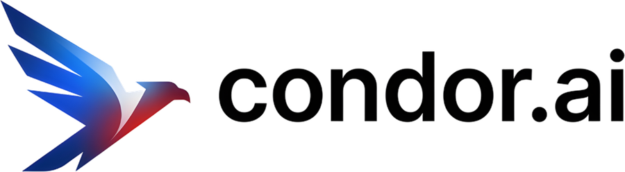

Simple
Una idea por pantalla. Mucho aire, pocas palabras y nada que sobre. Si algo se puede quitar, se quita.
Guion visual · Visión Claro · Octubre 2026
La nueva identidad de condor.ai. El mismo cóndor, más preciso. Letras dibujadas solo para nosotros. Un azul, mucho blanco e interfaces de acrílico. De aquí salen el sitio, el Portal Cóndor y cada producto, empezando por Medula.
Visión
Una idea por pantalla. Mucho aire, pocas palabras y nada que sobre. Si algo se puede quitar, se quita.
Cada curva tiene una razón y cada medida sale de una grilla. Un solo azul, usado con intención.
Plano en la marca, acrílico en las interfaces. Nada de 3D ni efectos: la calidad se nota en el detalle.

El cóndor
No cambiamos de pájaro. Lo redibujamos en vector, suavizamos sus vértices y le quitamos los tres colores. Sobre esa misma silueta hay tres propuestas; la marcada es la que recomendamos.
Original. El cóndor tricolor de hoy, en PNG. Funciona, pero se ve borroso en chico, no se puede usar en un color y sus degradés no salen bien impresos.
Pulido. La misma silueta en vector, en un color, con cada vértice suavizado a un radio de 2,25. Se siente más moderno sin dejar de ser nuestro.
Corte. La franja de luz que separaba ala y cuerpo en el original se vuelve un corte limpio. Le da profundidad sin usar color y hace al cóndor más reconocible. Es la propuesta principal.
Corte + ojo. Suma un ojo como nodo, el mismo recurso del punto de Medula. Más cercano y con más vida; menos sobrio.
El wordmark no usa ninguna tipografía. Cada letra está construida con círculos, arcos y astas de un mismo grosor, y por eso se puede dibujar trazo a trazo.
GeometríaAlto de x de 100, círculos de radio 50 y trazo de 22. La "a" es de un piso, como un círculo con su asta.
Ángulo del alaEl corte de la "c" y el remate de la "d" siguen los 30,7° del ala del cóndor. El logo entero habla el mismo idioma.
NodosEl punto de ".ai" y el de la "i" son círculos perfectos de radio 13: los nodos de la familia.
VivasComo son trazos, se escriben solas en la carga, en el inicio del sitio y en los cierres de video.
Siempre un color a la vez. Un gradiente cuenta como un color: una sola tinta que cambia de tono.
20 px Isotipo en pantalla. Bajo eso, usar el ícono.
16 px Ícono en favicon y pestañas
110 px · 28 mm Logo horizontal
Carga
Tres cargas, una por tipo de espera. La principal aprovecha que las letras son trazos: el cóndor aparece y condor.ai se escribe.
Entrada al sitio y al portal, una vez por sesión. 1,8 s.
Esperas sin duración conocida: la IA pensando, un agente respondiendo. El cóndor sube y baja.
Botones y celdas del portal. Una luz cruza la silueta. Toca el botón.
Color
La base es neutra, como un producto bien hecho. El Azul Cóndor aparece poco y por eso se nota: en el logo, en la acción principal y en lo que está activo.
Espectro de productos
Cada producto tiene un tono propio con la misma luz. La marca madre sigue siendo azul: el tono del producto vive en su ícono y en sus acentos, nunca en el logo de condor.ai.
Tipografía
Aa
500 · 600 · 700. Titulares, cifras, wordmark. Espaciado −3 % en grande.
Aa
400 · 500 · 600. Texto e interfaz. Hecha para pantallas, como SF.
Aa
400 · 500. Datos, código y rótulos. La misma familia de Medula.
Medula piensa.
Agentes que venden.
Titular de sección
Título de tarjeta
Bajada. Una o dos líneas, nunca un párrafo.
Texto corrido de 17 px: el tamaño base del sitio. En el portal, 15 px.
Rótulo · 12 px · Geist Mono
Material
Una lámina gruesa y pulida: deja pasar la luz, desenfoca lo de atrás y tiene un canto que brilla. Es la única textura de condor.ai. Nada de vetas, ruido ni vidrio sucio.
Fondo blanco al 66 %, desenfoque de 24 px y saturación. En oscuro, carbón al 60 %.
Un filo de luz arriba y una sombra de 1 px abajo. Es lo que hace que parezca grueso.
En piezas protagonistas, el borde refleja un arcoíris muy tenue. Nunca en tablas ni formularios.
Motion
Poco y con sentido. Tres curvas para todo, y una pieza de firma: las cosas se funden como se fundió el cóndor.
cubic-bezier(.16, 1, .3, 1)Lo que entra en pantalla: rápido al principio y se posa.
cubic-bezier(.25, .1, .25, 1)Cambios de estado, colores, tamaños.
cubic-bezier(.34, 1.4, .64, 1)Toques e interruptores. Un rebote mínimo.
La firma de movimiento: dos elementos que se acercan se unen con una curva suave, como las uniones del cóndor y de Medula. Para pestañas que se activan, chips que se agrupan y la carga.
Productos
Cada producto se dibuja con la gramática de Medula: trazo grueso, remates redondos, uniones suaves y un solo nodo libre que cuenta qué hace, el mismo nodo de los puntos de condor.ai. Se nombran "condor + palabra". Medula conserva su marca y se presenta como "Medula, de condor.ai".
Interfaz
Mismos tokens para el sitio y el portal. Blanco y líneas finas para trabajar, acrílico solo en la barra lateral y las capas que flotan, y el azul únicamente en la acción principal.
Miércoles 1 de octubre · datos de ejemplo
 Medula$179.850Vencido
Medula$179.850VencidoBotones
Campos
Controles
Aplicaciones
El futuro se construye desde el sur.
condorai.cl
condor track
Tus campañas, en vivo.
¿Qué ve un cóndor a 5.000 metros?
01.10
Ícono de app · 4 versiones
Archivos
:root {
--cn-azul: #3A5CFF; /* Azul Cóndor */
--cn-grafito: #0B0C12;
--cn-niebla: #F3F4F7;
--cn-fondo: #F5F5F7; /* oscuro: #000 */
--cn-texto: #0B0C12; /* oscuro: #F5F5F7 */
--cn-acento: #3A5CFF; /* oscuro: #5574FF */
--cn-acrilico: rgba(255,255,255,.66);
--cn-display: "Inter Tight";
--cn-texto-f: "Inter";
--cn-mono: "Geist Mono";
--cn-llegada: cubic-bezier(.16, 1, .3, 1);
--cn-r-icono: 22.5%;
}assets/marca/Isotipo (corte, pulido y ojo), wordmark, logo horizontal y vertical en azul, grafito, blanco, ionosfera, aurora y hielo, y las 6 marcas de producto.tokens/condor.cssColor, tipo, forma y movimiento, en claro y oscuro.herramientas/generar-marca.mjsEl cóndor, las letras construidas y las marcas de producto. npm run marca las regenera.